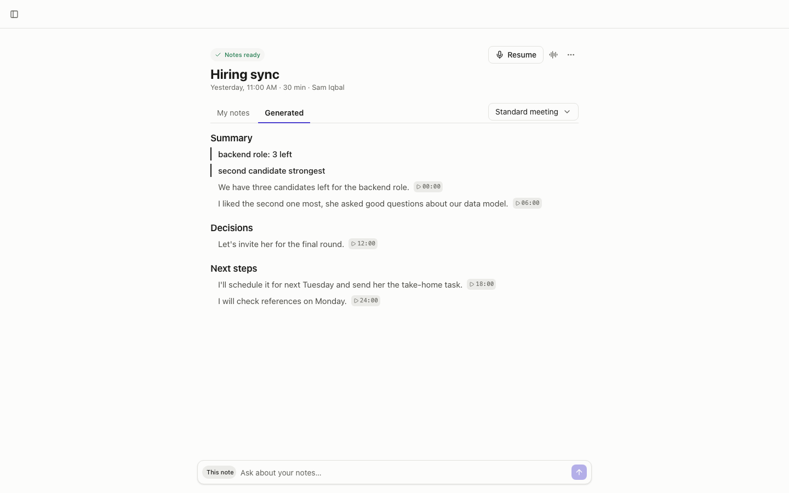
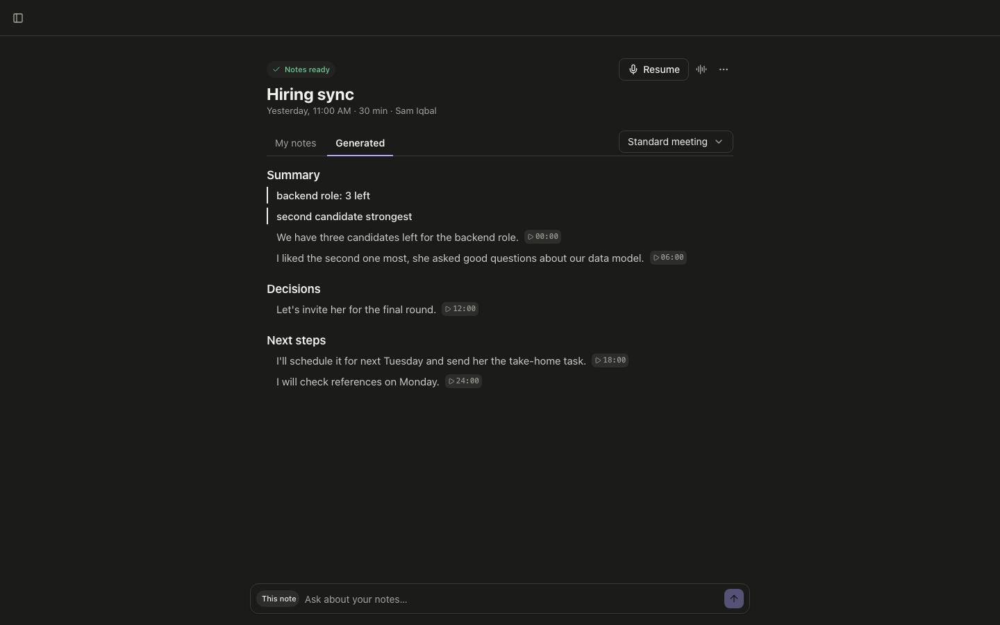

Meeting notes you can check, kept on your Mac.
Footnote records to your own disk while you talk, writes notes on this computer, and links every line back to the moment it was said.
Get Footnote for MacFree. No account. macOS 14 or later.


Two ways meeting notes let you down
The app stops in the middle of an important call, and the meeting is gone. Often it doesn't even say so.
The summary says something nobody said, and there's no way to check it.
How it works
Open the meeting
Today's calls come from your calendar link. Or start a blank note.
Write what matters to you
Footnote records your microphone and the call's sound, and saves it to disk every few seconds, at the pauses between sentences.
Stop
The transcript and the notes are made on your Mac, each line pointing to the moment it came from.
Built so you can trust it
Never lose a meeting
Audio goes to your disk in short pieces as you talk. If the app or the Mac stops, the note finishes from what was saved.
Check any line
Every generated line carries the time it was said. One click opens that moment in the transcript. Your own lines are marked as yours.
See where every note is
Saved, transcribing, writing, ready. If something fails, Footnote says why and offers Try again.
No account, nothing uploaded
No sign-in, no cloud. Speech-to-text and note writing run on this Mac.
Your words, your control
A real editor for your own notes. Short, normal or detailed notes. How long every meeting lasted.
Export that keeps its shape
Every note as a Markdown file, whenever you like.
Also there: templates and a "/" menu while you type, a pop-up a minute before a meeting, a transcript you can tidy, search across everything, folders, questions about your notes, and a 30-day trash.
Pricing
Questions
What do I need?
A Mac with macOS 14 or later. Notes are written by Apple's built-in model on macOS 26 with Apple Intelligence, so there is nothing else to install. On older Macs, or for faster notes, add your own free Groq key; the transcript is then sent to Groq. The speech model is about 60 MB and downloads on first use.
Does anything leave my Mac?
No. The only network use is reading your calendar link, if you add one, and downloading models when you choose to.
Does it join the call as a bot?
No. It listens to your Mac's microphone and sound output.
Do I have to tell people?
Yes, tell them you're taking notes. Recording rules depend on where you and they are.
Can it tell speakers apart?
It separates you (microphone) from everyone else (call audio). Names for each person aren't there yet.
Is there a Windows version?
Not yet. Mac first.
Can I bring notes from other meeting tools?
Not yet. You can take everything out of Footnote as Markdown at any time.
What happens to the audio?
By default it's deleted once it's transcribed. You can keep it for 7 days, 30 days, or for good in Settings.